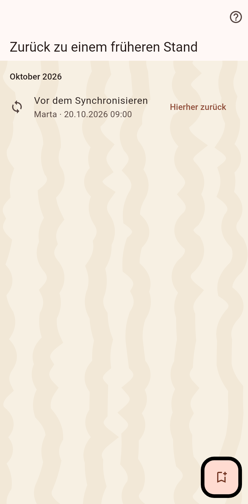

1. Die Momente
Die Liste der Momente: vor jedem Import und Abgleich, einem Zusammenführen, einem Archivieren, und die von Hand markierten. Wähle den vor der Änderung.

2. Bestätigen
Alles nach dem Moment wird in eine Datei geschrieben, die du behältst, dann entfernt; neuere Momente gehen mit. Partner behalten, was sie bekommen haben.
